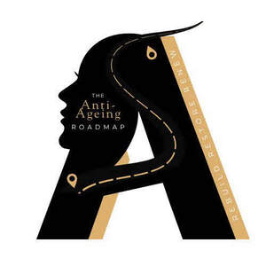

Trade Mark Journal No.2026/007 13 February 2026
UK00004310310 15 December 2025 (9,16,35,41)

- Class 9
- Electronic Teaching and instructional materials, namely presentations, annual plans, workbooks and handbooks for patients and clinics, materials, brochures, leaflets, appointment cards, loyalty cards; instructional manuals and educational materials relating to skincare, beauty and aesthetic treatments.
- Class 16
- Printed matter and teaching materials Teaching and instructional materials, namely presentations, annual plans, workbooks and handbooks for patients and clinics, in printed form; printed materials, brochures, leaflets, appointment cards, loyalty cards; packaging materials; instructional manuals and educational materials relating to skincare, beauty and aesthetic treatments; stationery and printed merchandise namely, branded pens, pencils, diaries, note books.
- Class 35
- Advertising, business and retail services connected to the sale of skincare and cosmetic preparations, beauty tools and devices, cosmetic accessories and storage products; Business consultancy, advisory and information services for clinics, practitioners and large chain clinics relating to the commercial implementation of an anti-ageing roadmap within skincare, beauty and aesthetic practices; business management and operational consultancy in the field of skincare, beauty and aesthetic treatments; providing commercial information and guidance to patients and clients relating to skincare and the ageing process for promotional and marketing purposes; retail and online retail services connected to the sale of pamper packs containing skincare products, beauty products, aesthetic treatment aftercare products and nutritional supplements; advertising, marketing and promotional services relating to skincare, beauty and aesthetic treatments.
- Class 41
- Education & training services Education, training and instruction services relating to an anti-ageing roadmap, including skincare, beauty and aesthetic treatments; providing workshops, seminars, online courses, tutorials and educational programs; provision of educational materials in the fields of skincare, anti-ageing and aesthetic procedures.
Allure Aesthetics Ltd
Representative: Marta Grobarcikova Gonczyova